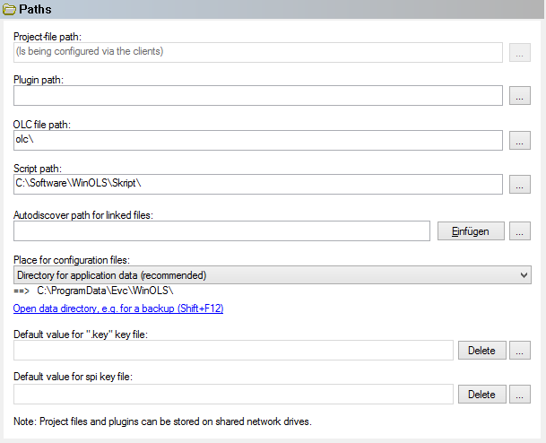

|
The dialog Configuration / Paths (Menu Miscellaneous) |

  
|
|
The dialog Configuration / Paths (Menu Miscellaneous) |
|

The different paths for the different kinds of files may be configured in the third page of the dialog. Project files and plugins may be stored on shared network drivers. You can also select the key file in this dialog which is used for eprom encryption.
Configuration files:
The WinOLS configuration files can be stored in two different places. If you’re using Windows 95, 98 or ME it is a good idea to store these files in the WinOLS directory. However for all newer windows versions this is not recommended. In this case you should store the configuration files into the central folder for application data. Use the hyperlink to open an Explorer window with the path or the hotkey Shift+F12 (while all dialogs are closed).
WinOLS uses the following files:
ols.cfg: |
The entire WinOLS-configuration |
ols.v###.cfg: |
The entire WinOLS-configuration of an older WinOLS version. Useful if your using multiple WinOLS versions parallel. |
ols2.cfg: |
A backup of some parts of the WinOLS configuration |
ols_sp.cfg: |
The data from the Axis description profiles |
ols_tb.cfg: |
The toolbars positions |
ols_wsp.cfg: |
The list of currently opened projects and windows (Workspace) |
You can copy these files any time, but should only replace them while WinOLS is closed. To transfer the configuration data to another PC, use the online-function.
Autodiscover path for linked files:
If you have files for each project which are stored under a strict system, WinOLS can automatically show them in the list of linked files. To activate this insert the respective path with wildcards. The path can contain placeholders like %Client.VIN%. It must end on characters or wildcards (i.e. not with "\" at the end, but for example with *.*). You can use multiple paths (separated with "/") to search multiple folders / use multiple wildcards. If one of the parts contains only characters and wildcards and no path, the path from the previous part is used.
Example 1:
X:\Test\*.*
Example 2:
X:\Documentation\%Benutzerdefiniert.Benutzer1%_*.jpg
Example 3:
X:\Test1\*.jpg/*.png/X:\Test2\*.*
Autodiscover path for A2L files:
Some projects contain Ids in the hexdump, which can be found in the A2L files. If you select "Project > Ex- & Import > Damos & A2L Import", WinOLS tries to find this id and searches all A2L files in / below this folder for it. If suitable files are found, they are displayed in a list.
Shortcuts
| Symbol bar: |
| Keyboard: | F12 |